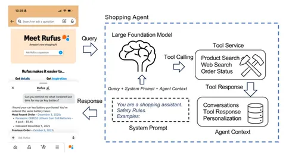
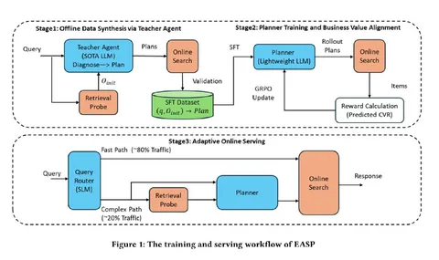
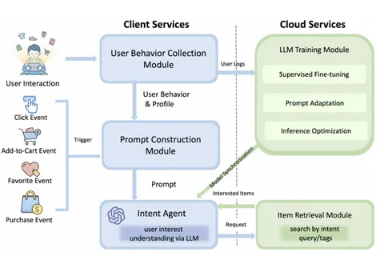

Сегодня делимся сразу тремя работами о том, как LLM встраивают в разные части рекомендательных и шопинговых систем.
Building a Production Shopping Agent at Scale
Amazon делятся опытом внедрения их шопингового агента Rufus. Здесь LLM — оркестратор: она принимает запрос пользователя, контекст диалога и релевантные пользовательские фичи и по ним понимает, в какие тулы нужно сходить, чтобы удовлетворить интент. По результатам работы тулов модель формирует окончательный ответ пользователю.
Агент работает в нескольких сценариях: 1) помогает с Product Discovery, когда пользователь ещё не знает конкретный товар; 2) отвечает на вопросы о конкретных товарах; 3) обращается к профилю пользователя, например смотрит прошлые покупки и текущие заказы, и может сам добавлять товары в корзину.
Авторы показывают несколько приёмов для ускорения цепочки.
• Отбирают только релевантные события из истории пользователя и сокращают историю диалога, чтобы не засорять контекст и уменьшать время до первого токена.
• Оптимизируют промпты, делая более стабильные и переиспользуемые префиксы, чтобы не пересчитывать одинаковое состояние агента.
• Делают вызовы тулов строже и по возможности параллелят, чтобы быстрее выдавать результат пользователю.
Можно улучшать каждый компонент по отдельности, но просадить общий пользовательский опыт. Чтобы такого не было, авторы предлагают смотреть на систему end-to-end: насколько удачной была работа агента, устроил ли результат пользователя и насколько дорогим и долгим оказался весь пайплайн.
Probe-Then-Plan: Environment-Aware Planning
Авторы из JD решают задачу сложных пользовательских запросов. Здесь «сложные» — не те, что требуют сложного ризонинга, а те, которые понятны человеку, но плохо переводятся на язык каталога. Например, пользователь хочет подобрать что-то «к зелёной рубашке»: человеку понятно, что речь скорее о брюках, джинсах или обуви, а простой поиск может выдать ещё больше рубашек.
Авторы замечают, что часто достаточно один раз посмотреть на выдачу, чтобы понять, как исправить запрос. Поэтому сначала смотрят, что по исходному запросу выдаёт продакшен-стек. Небольшой Qwen определяет, всё ли с выдачей хорошо, слишком ли она маленькая или товаров много, но они не соответствуют запросу, и при необходимости предлагает план исправления. Модель дистиллируют из большой LLM, а затем дообучают с RL на бизнес-цели.
Даже маленькая модель даёт заметное замедление, поэтому 80% простых запросов оставляют текущему продуктовому стеку, а 20% сложных отправляют через новый пайплайн.
В офлайне подход заметно лучше слепого переписывания запроса. По качеству он уступает ReAct, зато сильно выигрывает по времени. В онлайне всё конвертируется в GMV.
RecGPT-Mobile
Здесь on-device LLM используют, чтобы быстро понять изменения интента в рекомендательной ленте.
Допустим, пользователь внезапно начинает чаще кликать по компактным рюкзакам и добавлять их в избранное. Специальный модуль замечает изменение поведения и триггерит систему. Из залогированных на устройстве релевантных событий формируется промпт для on-device LLM, которая генерирует query под новый интент. Он отправляется в облако, где большая продовая система возвращает релевантные товары и обновляет ленту.
Чтобы всё это работало на устройстве, используют Qwen3-0.6B с квантизацией, берут не всю историю, а только полезный контекст и запускают систему не на каждый случайный клик, а только когда поведение действительно меняется.
В экспериментах LoRA обходит полный тюнинг модели, а квантизация теряет не так много качества. В месячном A/B-тесте получили +2,5% GMV на четырёх поверхностях.
@RecSysChannel
Разбор подготовила


